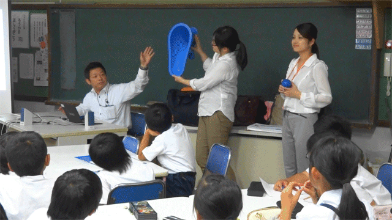

高松市の中心部に所在する東四国支店高松拠点は、ショールームと併設している所員約150名ほどの拠点です。
毎年、おもてなし一斉清掃で訪れる小豆島町の活性化に貢献したいという思いから、町役場や小学校と協働し企画した活動を紹介します。
2017年6月、小豆島町苗羽小学校4年生と5年生合わせて37名の児童に出前授業「トイレが世界を救う！」を実施しました。トイレの歴史や世界のトイレ事情など、クイズや動画を通して楽しく学んでもらいました。特に清潔で安全なトイレが使えない生活をしている世界の状況を、自分たちの身近な小豆島や苗羽小学校に置き換えて考える場面では、真剣な表情で一生懸命聞き入っていました。
この授業を受けてもらった5年生の児童にはその後「未来の地球にぼくたち・わたしたちが出来る事！」というテーマでポスターを描いてもらい、7月にその作品をLIXILショールーム高松に展示し、子どもたちや保護者、先生方をショールームに招待しました。
展示作品から好きな作品を子どもたちや先生、小豆島町職員の方、社員、ショールーム来館のお客さまに投票してもらい、LIXIL賞を含め、5点の作品に優秀賞を贈りました。作品はフォトタイルにして9月4日に受賞者に寄贈しました。
また、招待当日はLIXIL社員が働く姿を見てもらい、ショールームで各商品を紹介しました。見学後には商品を探すクイズを実施し、楽しみながら、製品の環境性能や機能性に触れてもらう良い機会となりました。「こんなお風呂がほしい！」という声や製品の機能に驚く声も聞こえて、賑やかなイベントとなりました。
9月4日は、中四国支社を挙げての「おもてなし清掃」の開催日で、LIXIL苗羽小学校の児童たちも、小豆島の二十四の瞳映画村のトイレ掃除に取り組みました。児童からは、「掃除ではたくさんの道具を色んな風に使って、キレイになって、とても勉強になりました」という感想もありました。
清掃後、映画村内の木造小学校教室でポスター優秀賞5点をフォトタイルにした「フォトタイル贈呈セレモニー」を執り行いました。贈呈式では映画村の代表らの挨拶と合わせ、ゆるキャラのことちゃんも登場し盛り上がりました。タイルを受け取った子どもたちは、ずっしりとした重さに驚くとともに、色鉛筆の風合いもきれいに再現されたタイルに見入っていました。
また、5年生の児童は、年間を通して壺井栄さんの名作「二十四の瞳」を学んでいます。今回、校長先生の発案で、授業を通して小説の中から子どもたちが一節を選び、その言葉を芸術家が描き文字で表現し、それをフォトタイルにするという、「文学を題材にした学びとアートとものづくりのコラボレーション」が実現しました。
児童たちが選んだ11枚の小説の一節と、映画村で撮影した写真を組み合わせた12枚のタイルが、10月小学校に寄贈されました。贈呈式では、LIXIL社員が編集した動画を投影し、子どもたちは自分の映像が映ると明るく笑っていましたが、時折真剣な表情で今までの活動を見てくれていました。校長先生からは「これまでの活動を通じてLIXILさんのどんな事も皆さんが児童と向き合って一緒になって取り組む姿勢に暖かな社風を感じました。」と嬉しいお言葉を頂きました。
終了後、LIXILの社員たちに向けて、児童や先生からお礼や感謝の言葉をたくさんいただき、歌を歌って温かく見送ってくれました。一連の活動は小豆島町や小学校など地域の皆さんのご協力があっての活動です。東四国支店では今後も地域に根ざした活動を継続し、小豆島町の全小学校への展開を計画しています。